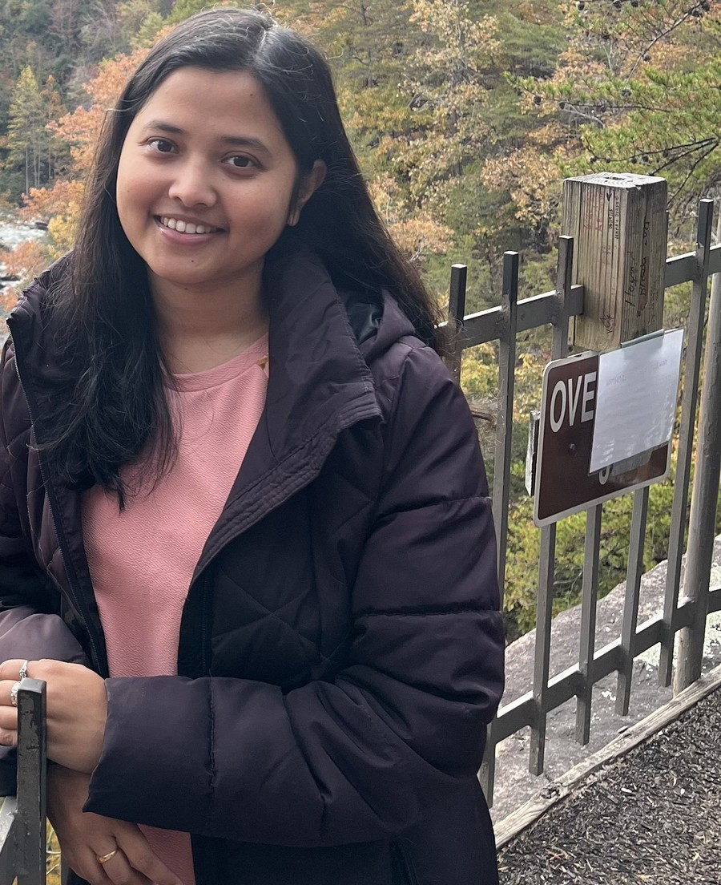
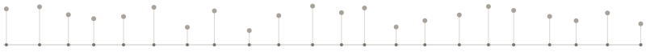

Samhita Pal
Postdoctoral Research Associate in Biostatistics
Vanderbilt University Medical Center, Department of Biostatistics
I work at the intersection of Bayesian inference, high-dimensional statistics, transfer learning, and causal methodology, with applications to precision medicine, genomics, and biological network discovery. My current focus is on developing rigorous uncertainty quantification for projection-posterior methods in Bayesian transfer learning, and on sensitivity analysis frameworks for treatment effect generalization across heterogeneous populations.

About
I completed my Ph.D. in Statistics in May 2025 at North Carolina State University, advised by Subhashis Ghosal. My dissertation, Bayesian Inference in High-Dimensional Regression Models using Sparse Projection Posterior, developed theory and computation for projection-posterior methods in high-dimensional Bayesian regression and variable selection — work that was a finalist for the ISBA Savage Award in the Theory and Methods category.
Since June 2025, I have been a Postdoctoral Research Associate at Vanderbilt University Medical Center, co-advised by Amir Asiaee and Jared Huling (University of Minnesota). My postdoctoral work extends my dissertation's projection-posterior framework into a general two-stage Bayesian transfer learning methodology (ProjectionTL), and applies causal inference methodology — data fusion, calibration, sensitivity analysis, and instrumental variable regression — to problems in precision medicine, clinical trial generalization, and gene regulatory network discovery.
I am currently on the statistics and biostatistics faculty job market.
News
Selected honors
- 2026Finalist, ISBA Savage Award for dissertation (Theory and Methods category)
- 2024NC State Graduate Student Association Award for Travel and Conferences
- 2024IMS ICSDS Student Paper Competition Travel Award
- 2023NSF Travel Award, New Frontiers in Reliability and Risk Analysis Symposium
- 2023IISA Student Paper Competition Travel Award
- 2022Gertrude M. Cox Achievement Award for Outstanding Ph.D. Qualifier Exam
Full list of honors and awards in my CV.